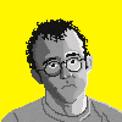
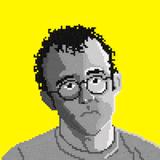

I am a 23 year old trying to figure "it" out. I recently earned a Bachelors of Arts
in Computer Science with minors in Math, Art, & Biology from the Univeristy of Mississippi.
I have a deep interest in design of all forms, data analysis, & linux/ security.
I am passionate about humanitaranism, enviromentalism, & their overlap.
This is a low energy website. This means: no javascipt(pure html & css),
dithered photos with Floyd Steinberg algorithm, & small clean files.
Possible future iterations include improved file compression, using a green web host, & improving SEO.
Jana Entrekin:
Computer Scientist
?
I am an avid seeker of knowledge & skills. I would enjoy an opportunity in any field of computer science. I am currently focused on R based webscraping and html5/ css3.
$_
4+ years experiance using terminal, bash (unix shell), linux, & scripting. I've used these skills to perform security tasks, macbook recovery/wipe, & android phone optimization.
R
I have a background in biological data. I would enjoy persuing data analytics in the future. Check out my github repository of R projects. Senior Project
Biologist


Artist
 
